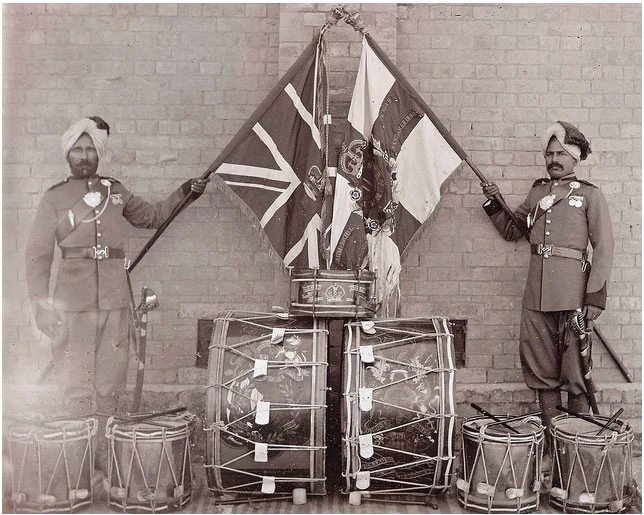

भारतीय सीमाओं से परे और सीमाओं पर निडर


शीर्षक: Beyond the Indian Borders and Fearless on the Frontiers
श्रेणी: Beyond the Indian Borders and Fearless on the Frontiers
कलाकार: सिख रेजिमेंटal Centre
वर्ष: ऐतिहासिक
श्रेणी: Beyond the Indian Borders and Fearless on the Frontiers
कलाकार: सिख रेजिमेंटal Centre
वर्ष: ऐतिहासिक
भारतीय सीमाओं से परे और सीमाओं पर निडर
सिख इकाइयों ने जल्द ही पूरे एशिया और अफ्रीका में सेवा की। XV सिखों ने "चीन 1860-62" अर्जित किया। 1863 में अंबेला में, XIV सिखों ने बार-बार क्रैग पिकेट पर कब्जा किया और उसका बचाव किया और तेरह भारतीय ऑर्डर ऑफ मेरिट प्राप्त किए। 1878-80 के दूसरे अफगान युद्ध के दौरान, XIV, XV और XLV सिखों ने अली मस्जिद, जलालाबाद, बाज़ार घाटी, अहमद खेल और कंधार में लड़ाई लड़ी। उनके सम्मानों में "अली मस्जिद," "अफगानिस्तान," "अहमद खेल" और "कंधार" शामिल हैं। 22 मार्च 1885 को टोफ्रेक में, XV सिख एक सामूहिक आश्चर्यजनक हमले के खिलाफ मजबूती से खड़े रहे, ज़रेबा को बचाया और "सुकिन" और "टोफ्रेक" कमाए; सूबेदार गुरदित सिंह को इंडियन ऑर्डर ऑफ मेरिट प्राप्त हुआ। XXXVI सिखों ने 1891 में "मणिपुर" अर्जित किया। 1895 में चित्राल की छत्तीस दिन की घेराबंदी के दौरान, XIV सिखों ने कैप्टन टाउनशेंड की चौकी की रीढ़ बनाई। लेफ्टिनेंट हार्ले को विशिष्ट सेवा ऑर्डर, सूबेदार गुरमुख सिंह को ऑर्डर ऑफ ब्रिटिश इंडिया, और जमादार अत्तर सिंह और सात अन्य को इंडियन ऑर्डर ऑफ मेरिट प्राप्त हुआ। XIV और XV सिखों को "चित्राल की रक्षा" और "चित्राल की राहत" प्राप्त हुई।
सिख इकाइयों ने जल्द ही पूरे एशिया और अफ्रीका में सेवा की। XV सिखों ने "चीन 1860-62" अर्जित किया। 1863 में अंबेला में, XIV सिखों ने बार-बार क्रैग पिकेट पर कब्जा किया और उसका बचाव किया और तेरह भारतीय ऑर्डर ऑफ मेरिट प्राप्त किए। 1878-80 के दूसरे अफगान युद्ध के दौरान, XIV, XV और XLV सिखों ने अली मस्जिद, जलालाबाद, बाज़ार घाटी, अहमद खेल और कंधार में लड़ाई लड़ी। उनके सम्मानों में "अली मस्जिद," "अफगानिस्तान," "अहमद खेल" और "कंधार" शामिल हैं। 22 मार्च 1885 को टोफ्रेक में, XV सिख एक सामूहिक आश्चर्यजनक हमले के खिलाफ मजबूती से खड़े रहे, ज़रेबा को बचाया और "सुकिन" और "टोफ्रेक" कमाए; सूबेदार गुरदित सिंह को इंडियन ऑर्डर ऑफ मेरिट प्राप्त हुआ। XXXVI सिखों ने 1891 में "मणिपुर" अर्जित किया। 1895 में चित्राल की छत्तीस दिन की घेराबंदी के दौरान, XIV सिखों ने कैप्टन टाउनशेंड की चौकी की रीढ़ बनाई। लेफ्टिनेंट हार्ले को विशिष्ट सेवा ऑर्डर, सूबेदार गुरमुख सिंह को ऑर्डर ऑफ ब्रिटिश इंडिया, और जमादार अत्तर सिंह और सात अन्य को इंडियन ऑर्डर ऑफ मेरिट प्राप्त हुआ। XIV और XV सिखों को "चित्राल की रक्षा" और "चित्राल की राहत" प्राप्त हुई।
मोबाइल पर खोलें
अपने फोन पर इस कलाकृति को देखने के लिए स्कैन करें।